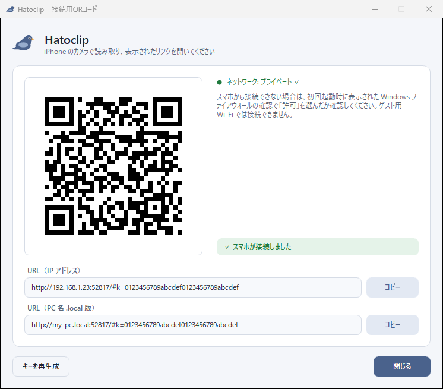
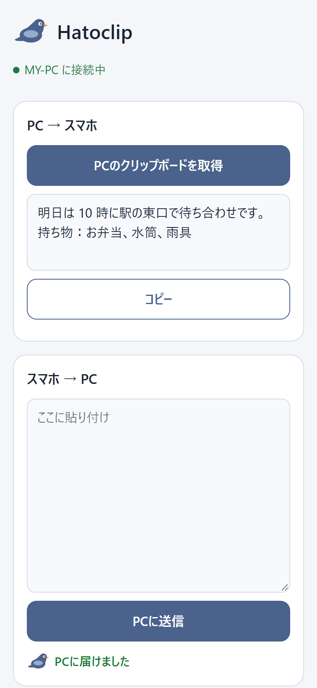
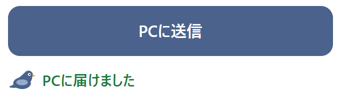

Hatoclip
スマホと PC のあいだを、
同じ Wi-Fi にあるスマホと Windows PC で、コピーしたテキストをやり取りするアプリです。スマホは PC に出る QR コードを読むだけ。アプリのインストールはいりません。
無料・インストーラーなし（exe 1 つ）・管理者権限は不要です


3 ステップで、鳩が飛び立ちます
最初に 1 回つなげば、次からはページを開くだけです。
-
PC で起動する
Hatoclip.exeをダブルクリックします。タスクトレイに鳩のアイコンが出て、最初は QR コードの画面が開きます。 -
スマホで QR を読む
スマホのカメラで QR コードを読み取り、出てきたリンクを開きます。「（PC名）に接続中」と出れば準備完了です。
-

送る・受け取る
テキストを貼って「PCに送信」。PC では Ctrl+V で貼り付けられます。PC でコピーしたものは「PCのクリップボードを取得」で受け取れます。
できること
-
スマホ → PC に送る
スマホで貼り付けて「PCに送信」。PC のクリップボードに入り、「鳩がテキストを届けました」と通知が出ます。
-
PC → スマホに取ってくる
PC でコピーしておき、スマホで「PCのクリップボードを取得」。表示されたテキストを「コピー」できます。
-
スマホにアプリは不要
使うのはブラウザで開くページだけ。iPhone はもちろん、Android でも使えます。
-
ホーム画面に置ける
Safari の「ホーム画面に追加」で、アプリのように開けます（最初に接続キーの貼り付けが必要です）。
-
iOS ショートカット（任意）
iPhone の「ショートカット」アプリから、ページを開かずに送受信することもできます。背面タップにも割り当てられます。
-
ダークモード
PC の画面も、スマホのページも、それぞれの設定に合わせて明るい色・暗い色で表示します。
-
自動で起動
トレイメニューの「Windows起動時に自動起動」にチェックを入れると、サインインしたときに起動します。
安心して使うために
鳩は家の Wi-Fi の中だけを行き来します。
Hatoclip が守っていること
- 同じ Wi-Fi の中だけで通信します。インターネット上のサーバーは使いません
- 外部との通信はしません。更新チェックや利用状況の送信もありません
- スマホからの操作には接続キー（QR コードに入っています）が必要です。キーを知らない端末からは使えません
- 管理者権限はいりません。ファイアウォールなどの設定を勝手に変えることもありません
- ログにクリップボードの内容や接続キーは残しません
- スマホが PC のクリップボードを取得すると、トレイの鳩アイコンが数秒だけ変わるので気付けます
- ソースコードを公開しています
知っておいてほしいこと
- テキストだけです。画像やファイルは送れません
- 通信は HTTPS ではなく、暗号化されない HTTP です。カフェなど信頼できない Wi-Fi では使わないでください
- コード署名をしていないため、初回は Windows の SmartScreen（青い画面）が出ることがあります。「詳細情報」→「実行」で起動できます（README の説明）
使うまでの流れ
動作環境
- PC
- Windows 10 / 11（x64 / arm64）
- スマホ
- カメラとブラウザがある iPhone または Android
- ネットワーク
- PC とスマホが同じ Wi-Fi（同じルーター）につながっていること。ゲスト用 Wi-Fi では使えません
arm64 版は実機での動作確認をしていません。PC がスリープしている間は使えません。
インストール
- Releases のページから
Hatoclip-バージョン-win-x64.zipをダウンロードします（ARM 版 Windows はwin-arm64） - zip を開き、中の
Hatoclip.exeを好きなフォルダーに置きます Hatoclip.exeをダブルクリックして起動します- ファイアウォールの確認が出たら「プライベート ネットワーク」にチェックを入れ、「アクセスを許可する」を押します
- 表示された QR コードをスマホで読み取れば完了です
詳しい手順やつながらないときの確認方法は README にあります。